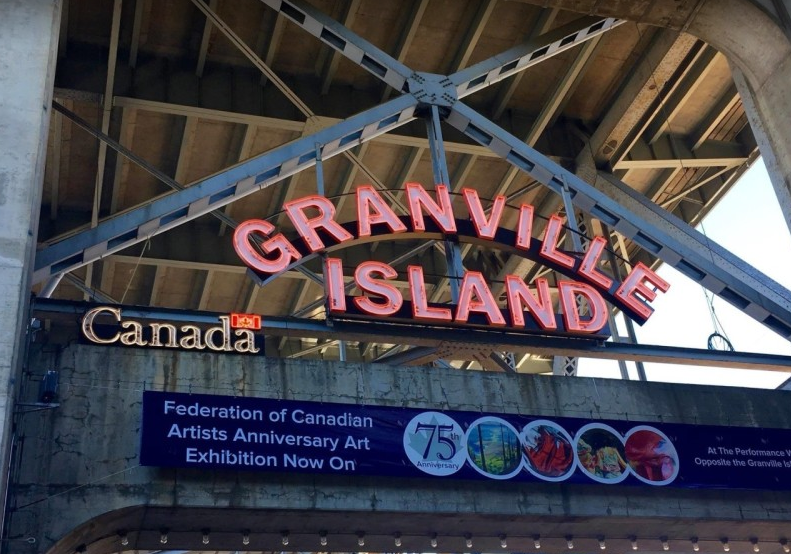
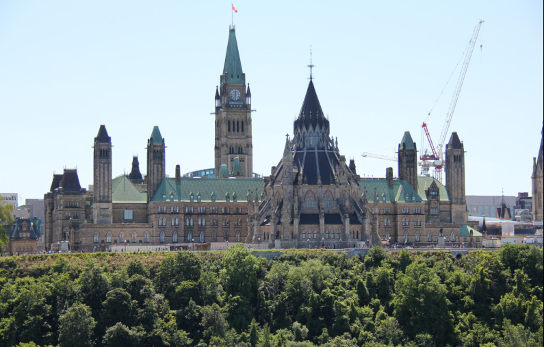
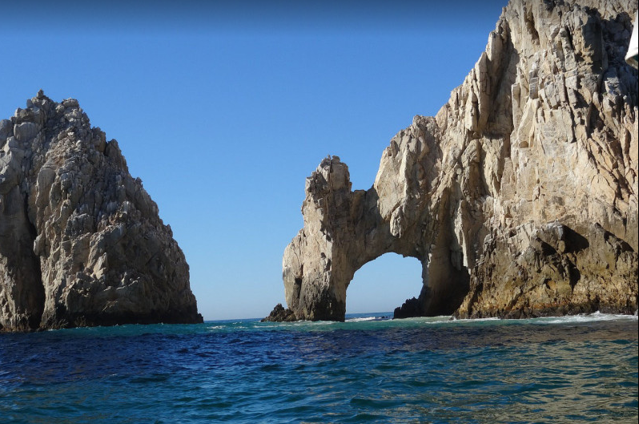
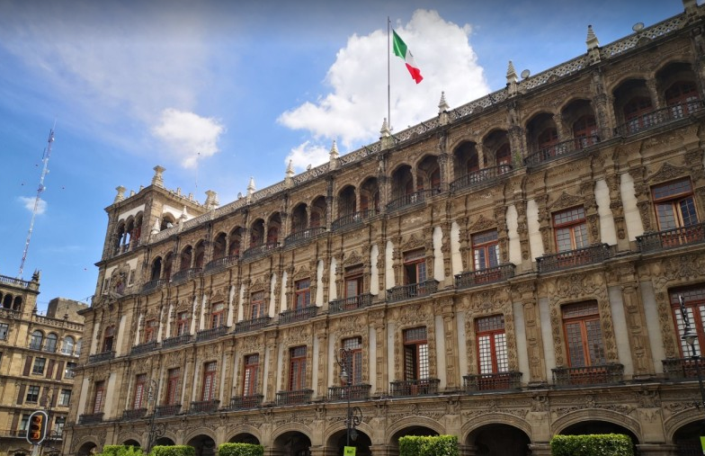
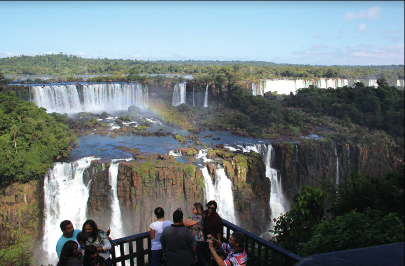
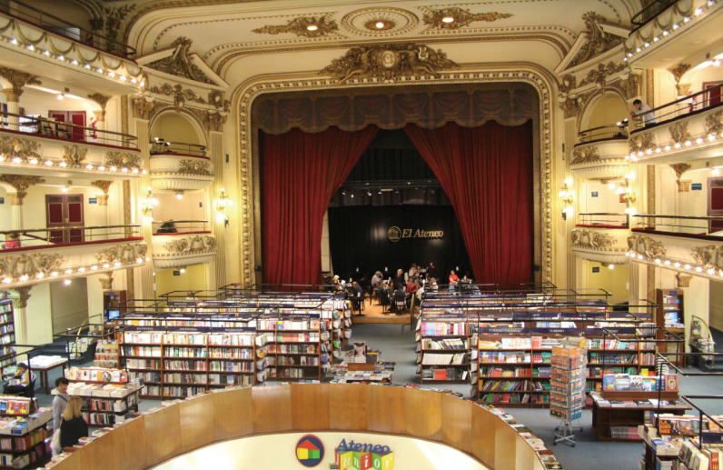
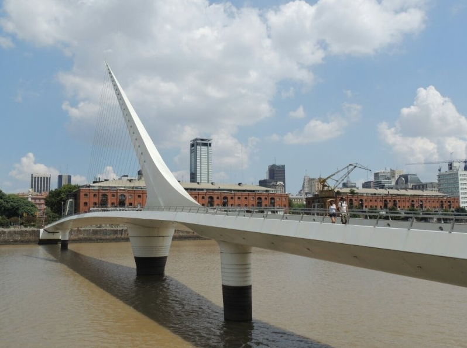
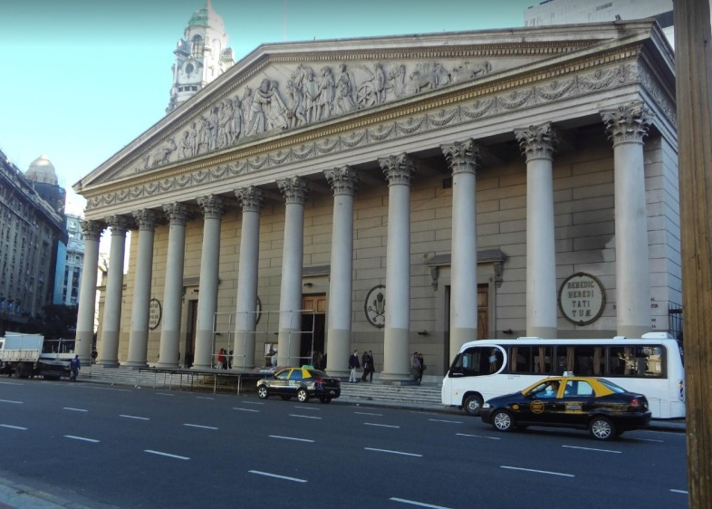
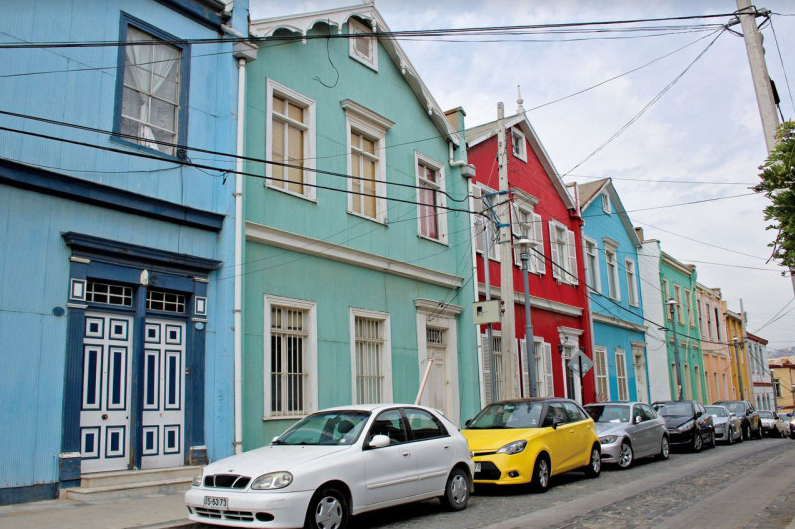
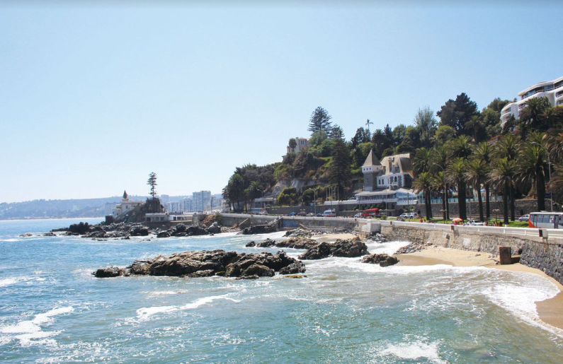

그랜빌 아일랜드(밴쿠버 최고의 퍼블릭 마켓이 있는 볼거리와 먹을거리가 가득한 매력적인 곳)
 캐나다 국회의사당(캐나다 연방 국회의사당의 소재지로 오타와의 대표적인 관광명소 중 한 곳)
멕시코(화려하게 꽃피웠던 문명의 보고. 아름다운 자연환경과 보석 같은 문화유산이 빛나는 나라)
엘 아르코 데 카보 산 루카스(로스카보스의 상징인 바하 캘리포니아 반도의 최남단에 위치한 아치 모양의 암석)
 소칼로광장(멕시코의 정치, 경제, 종교의 중심지이자, 아즈텍 문화와 식민지 시대의 문화가 혼합된 공간)
브라질(아름다운 대자연과 다양한 볼거리, 먹거리로 가득한 나라)
 이과수 국립공원(탁 트인 시야를 자랑하는 산책로로 아름다운 이과수 폭포를 계속 감상할 수 있는 곳)
아르헨티나(유럽의 영향을 받은 다양한 문화와 풍요로운 먹거리와 함께 대자연의 광활함을 만끽할 수 있는 나라)
엘 아떼네오 서점(대형 오페라 극장을 개조해 만든 세계에서 가장 아름다운 서점 중 하나인 장소)
 여인의 다리(부에노스아이레스의 랜드마크로 떠오른 보행자 다리)
 부에노스아이레스 대성당(12인의 사도를 상징하는 12개의 대리석 기둥과 아치가 인상적 5월 광장에 접한 대성당)
발파라이소(파스텔 톤의 아름다운 집들이 언덕을 이루고 있는 아름다운 항구 도시)
 비냐 델 마르(태평양 연안에 자리잡은 칠레의 대표적 휴양도시)
우루과이(아르헨티나와 브라질 사이에 위치한 세계 최대의 축산국)